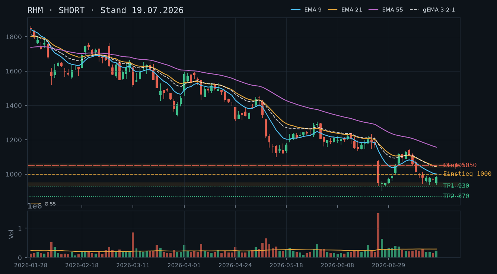
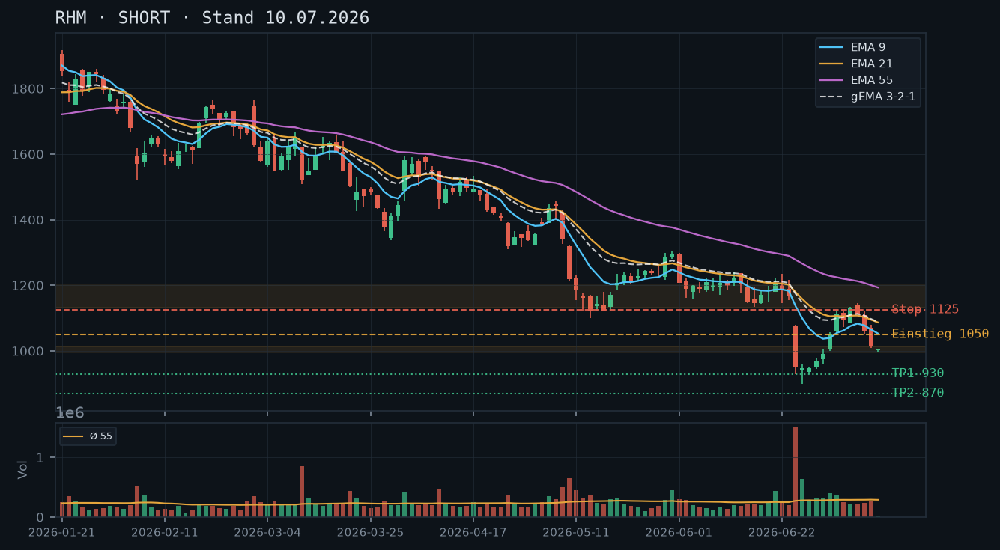

RHM bleibt im intakten Abwärtstrend mit fallenden EMAs und schwacher Erholung – das Short-Bias aus der Voranalyse vom 10.07. wird bestätigt, kurzfristige Stabilisierungsversuche ändern nichts am Gesamtbild.

Der übergeordnete Abwärtstrend ist intakt: RHM hat seit dem Allzeithoch über 1.650 eine Serie fallender Hochs und Tiefs gebildet. Der katastrophale Crash-Tag vom 24.06. (Close 949, rel. Volumen 5,54x – Extremwert) markierte das aktuelle Swing-Tief bei 930. Die Erholung seither lief bis maximal 1.146 (02.07.) und dreht seither wieder südwärts. Der Schlusskurs vom 17.07. bei 984,20 notiert deutlich unter allen EMAs und unter dem Reaktionshoch von 1.146. Das Muster aus Erholung → Scheitern → neues Abwärtsimpuls wiederholt sich. Kein tragfähiger Support wurde bisher etabliert; die Zone 930–949 (Crash-Tiefs) ist der einzige mehrfach angetestete Bereich, der als kritisches Unterstützungsniveau gilt.
Die letzten fünf Kerzen (13.–17.07.) zeigen ein zermürbendes Konsolidierungsmuster auf niedrigem Niveau: kleinere Körper, mehrfach Dochte nach oben (983, 990), die abverkauft wurden. Die Kerze vom 17.07. (Low 937,60, Close 984,20) hat einen relevanten unteren Docht und schließt near high – kurzfristig leicht bullisch, aber im Kontext des übergeordneten Trends nur als Bear-Flag-Abschluss zu interpretieren. Volumina durchgehend unter Schnitt (0,51–0,97x), was die fehlende Kaufüberzeugung unterstreicht.
Die EMA-Struktur ist klar bärisch: EMA9 (1.000,82) < EMA21 (1.044,45) < EMA55 (1.156,99) – alle drei fallen. Der gewichtete gema_321 liegt bei 1.041,39, ebenfalls fallend. Der Kurs bei 984,20 notiert unter allen drei EMAs sowie unter dem gema_321 – maximaler Druck nach unten. Der Abstand zum EMA55 beträgt rund 17%, was den massiven strukturellen Schaden dokumentiert. Keine Konvergenz, keine bullische Kreuzung in Sicht – das EMA-Bild bestätigt vollständig das Short-Bias aus der Voranalyse.
| Richtung | Short |
| Einstieg | 984,20 (bereits aktiv) oder bei Bounce-Scheitern unterhalb 1.010–1.015 (Bereich EMA9) |
| Stop | 1.050 (über EMA21 und letztem Reaktionshoch 07.07. bei 1.146 – enger Stop möglich bei 1.020 für aggressivere Trader) |
| Ziel | 930 (Crash-Tief 24.06.) als primäres Ziel, 870 als sekundäres Kursziel |
| CRV | 2,4 : 1 (zum Primärziel 930, Stop 1.050) |
Im intakten Abwärtstrend mit Kurs deutlich unter allen EMAs ist ein Cash-Secured Put (CSP) strukturell ungeeignet – es existiert kein tragfähiger Support oberhalb der Crash-Tiefs bei 930–949, der als Puffer dienen könnte. Ein Covered Call (CC) passt zur bärischen Marktstruktur, setzt jedoch einen Aktienbestand voraus. Da laut IBKR-Snapshot kein Aktienbestand vorhanden ist, wäre ein CC ein Naked Call mit entsprechend anderem Risikoprofil – dies ist explizit zu beachten.
| Geschäft | Covered Call |
| Strike | 1050.0 |
| Puffer | 6.7 % |
| Zone | oberhalb EMA21-Bereich 1.044 und Reaktionshoch 07.07. bei 1.146 – Strike 1.050 liegt im Widerstandscluster |
| Verfall bis | 2026-07-25 (Freitag, 6 Tage) |
| Begründung | Der Strike 1.050 liegt knapp über dem EMA21 (1.044) und bietet ca. 6,7% Puffer zum letzten Schlusskurs (984,20). Die Zone 1.040–1.060 ist Widerstandscluster (EMA21, mehrfaches Scheitern in KW28). Im Abwärtstrend ist das Scheitern der Erholung an diesem Level hochwahrscheinlich. Andienungsszenario: Eine Andienung (Kursanstieg über 1.050) wäre strukturell überraschend und würde eine echte Trendwende signalisieren – sie wäre als Roll-Trigger zu werten. ACHTUNG: Ohne Aktienbestand ist dies ein Naked Call mit theoretisch unbegrenztem Verlustpotenzial. In der Optionskette zu prüfen: ausreichende Prämie für den Puffer (Richtwert >0,5% des Underlyings), Liquidität (enger Spread, ausreichend Open Interest), Delta idealerweise unter 0,25. |
Die SHORT-Empfehlung vom 10.07. wird durch die seither eingelaufenen Daten vollständig bestätigt. Der damalige Einstiegsbereich 1.005–1.013 war korrekt – der Kurs ist seither von ~1.013 auf 984,20 (17.07.) gefallen. Das primäre Kursziel 930 (Crash-Tief 24.06.) ist noch nicht erreicht; das CRV hat sich durch den Kursrückgang leicht verbessert. Der Stop bei 1.080 (über EMA9 und Swing-Hoch 08.07.) wurde nicht ausgelöst; EMA9 ist inzwischen auf 1.000,82 gefallen und liegt nun nur noch ~1,7% über dem aktuellen Kurs – der Stop kann bei laufender Short-Position auf ca. 1.050 (über EMA21) nachgezogen werden.
RHM befindet sich in einem mehrstufigen Abwärtstrend, der mit dem Hochpunkt über 1.650 begann. Die relevanten Strukturpunkte:
Das Muster ist klassisch: Crash → schwache Erholung mit fallendem Volumen → erneute Distribution. Die Zone 930–949 (Crash-Tiefs) ist der einzige mehrfach identifizierbare Support; ein erster Test dieser Zone liegt vor, ein zweiter Test ist strukturell wahrscheinlich.
Unbestätigter Bereich: 940–950 wurde zweimal angetastet (24.06. Close 949, 25.06. Low 900, aber Close 947) – die Zone 930–950 gilt als schwach bestätigter Support, kein verlässliches Auffangnetz.
Die Kerzensequenz 13.–17.07. im Detail:
Das Gesamtbild: Bear Flag auf sehr niedrigem Volumen. Kein einziger dieser Tage zeigt Kaufdruck, der eine strukturelle Wende rechtfertigen würde. Der wiederholte Test der 937–942-Zone ohne Stabilisierung auf Volumen ist ein Warnsignal für Long-Positionen.
Aktuelle EMA-Werte (17.07.):
Die bärische EMA-Kaskade (9 < 21 < 55, alle fallend) ist lehrbuchhaft. Der Kurs ist bereits unter EMA9 gebrochen – damit fehlt auch der letzte dynamische Support. Der Abstand EMA9 zum Kurs (~16 Punkte) ist minimal; ein Bounce zum EMA9 wäre ein klassischer Short-Einstieg. Der gema_321 bei 1.041 deckt sich gut mit dem identifizierten Widerstandscluster 1.040–1.060.
Setup A – Continuation Short (bevorzugt):
Setup B – Aggressiver Short bei Bounce:
Setup C – Breakdown-Trade:
Ein CSP ist in der aktuellen Marktlage nicht empfehlenswert. Die Gründe:
Strike-Herleitung: Der Widerstandscluster 1.040–1.060 ergibt sich aus drei Konfluenzpunkten:
Strike 1.050 liegt mittig in dieser Zone und bietet einen Puffer von 6,7% zum letzten Schlusskurs (984,20). Der Strike hat die Widerstandszone vor sich (er liegt in ihr, nicht darunter) – was im aktuellen Kontext akzeptabel ist, da das Scheitern an der Zone das Wahrscheinlichkeitsszenario darstellt.
Andienungsszenario: Würde RHM auf 1.050 steigen und der Call zugewiesen, hätte der Kurs EMA9, gema_321 und EMA21 überwunden. Dies entspräche einer echten Trendwende und wäre ein Signal, die Short-Positionierung vollständig zu überdenken. In diesem Fall wäre der Naked Call zu schließen (Verlust begrenzen) oder zu rollen: Roll auf höheren Strike (z.B. 1.100) mit gleichem oder nächstem Verfall (01.08.2026), sofern noch ausreichend Prämie vorhanden.
Roll-Trigger für den Naked Call:
Wichtiger Hinweis – Naked Call: Da laut IBKR-Snapshot kein Aktienbestand (0 Stück) in RHM vorhanden ist, ist der verkaufte Call ein Naked Call mit theoretisch unbegrenztem Verlustpotenzial im Falle eines Short-Squeeze oder positiver Newsüberraschung. Das Risikoprofil unterscheidet sich fundamental vom Covered Call. Positionsgröße und Margin-Anforderungen sind entsprechend zu berücksichtigen. In der Optionskette zu prüfen: Prämie im Mid (Richtwert >0,5% des Strike-Werts = ~5,25 EUR), Spread-Enge, Open Interest >500 Kontrakte je Strike.
Verfall: 25.07.2026 (Freitag, 6 Tage Restlaufzeit) – innerhalb der 12-Tage-Grenze, ausreichend kurz für Theta-Vorteil.
RHM befindet sich nach dem massiven Einbruch Ende Juni in einem intakten Abwärtstrend mit fallenden EMAs und schwacher Erholung, die nun wieder abbricht.

Der Kurs brach am 24.06.2026 mit rel. Volumen von 5,54 von ~1.167 auf ~949 ein (Tagesrange 930–1.080) und bildete ein markantes neues Tief. Die anschließende Erholung bis 1.133 (06.07.) scheiterte deutlich unterhalb des alten Unterstützungsbereichs 1.150–1.200 und hinterließ ein niedrigeres Hoch. Aktuell zeigt RHM mit dem heutigen Schlusskurs von ~1.005 ein neues Tief im Kontext der Erholungsphase – die Sequenz fallender Hochs (1.307 → 1.233 → 1.133) und fallender Tiefs (1.145 → 930 → 995) ist klar bearish.
Die letzten drei Kerzen (08.–10.07.) zeigen ein klares Verteilungsmuster: Nach dem gescheiterten Hochpunkt bei 1.146 (07.07.) folgen zwei Abwärtskerzen mit tieferen Schlusskursen (1.059 → 1.013 → 1.005). Die heutige Kerze (10.07.) ist eine enge Doji-artige Kerze mit sehr niedrigem Volumen (rel. 0,09 – Intraday-Daten), was auf einen Handelstag mit wenig Aktivität hindeutet, aber der Trend bleibt abwärts gerichtet.
Alle drei EMAs verlaufen klar abwärts in bearisher Staffelung (EMA9: 1.053 < EMA21: 1.087 < EMA55: 1.193), der Kurs (1.005) liegt deutlich unterhalb aller EMAs. Der gema_321 bei 1.088 bestätigt den intakten Abwärtstrend. Ein bullisches Kreuz oder eine Annäherung an die EMA-Cluster ist derzeit nicht erkennbar.
| Richtung | Short |
| Einstieg | 1.013 (Break des gestrigen Tiefs bestätigt, Einstieg bereits aktiv ~1.005–1.013) |
| Stop | 1.080 (über EMA9 und letztem Swing-Hoch vom 08.07.) |
| Ziel | 930 (Tief vom 24.06.2026) |
| CRV | 1.1 : 1 (zum primären Ziel), 2.8 : 1 (zum Ziel 870) |
RHM befand sich von März bis Mitte Juni 2026 in einem ausgeprägten Abwärtstrend. Vom Hoch bei ca. 1.656 (10.03.2026) fiel der Kurs in mehreren Schüben auf das Tief bei 1.155 (13.05.2026), gefolgt von einer flachen Konsolidierung zwischen 1.120 und 1.305 (Mai–Juni). Diese Konsolidierung brach am 24.06.2026 mit explosivem Volumen (rel. 5,54 – 554% des 55-Tage-Schnitts) massiv nach unten aus. Der Kurs kollabierte von 1.075 auf ein Tagestief von 930, schloss bei 949. Dieses Ereignis markiert den schwersten Tageseinbruch im gesamten Beobachtungszeitraum.
Die Erholung danach verlief zögerlich: 25.–26.06. Stabilisierung um 947, dann schrittweise Erholung bis zum Swing-Hoch von 1.146 am 07.07.2026. Dieses Hoch liegt deutlich unterhalb der alten Unterstützungszone 1.150–1.200, die damit zur Widerstandszone wurde. Seitdem zeigt der Kurs wieder Schwäche: 1.059 (08.07.) → 1.013 (09.07.) → 1.005 (10.07.). Die Struktur lautet: Fallende Hochs (1.305 → 1.233 → 1.146) und fallende Tiefs (1.145 → 930). Klarer Abwärtstrend ohne bullische Umkehrsignale.
Wichtige Levels: Widerstand: 1.080 (EMA9), 1.087 (gema_321), 1.133–1.146 (letztes Swing-Hoch). Unterstützung/Ziele: 930 (Tief 24.06.), darunter ~870 (projiziertes Ziel aus Flaggenmessung).
Der 24.06.2026 hinterließ eine Marubozu-artige Abwärtskerze mit extremem Volumen – ein klassisches Panic-Selling-Signal, das aber in einem bereits geschwächten Trend auftritt und als Fortsetzungsformation zu werten ist, nicht als Umkehr. Die anschließende Erholung (25.06.–07.07.) verlief mit nachlassendem Volumen (max. rel. 1,39 am 01.07.), was die Kraft des Rebounds in Frage stellt.
Die letzten drei Handelstage zeigen ein bearisches Muster: Am 07.07. entstand eine Abwärtskerze von 1.146 auf 1.112 (höheres Volumen als Vortag). Am 08.07. folgte ein weiterer Rückgang auf 1.059 mit einer langen unteren Dochte (Intraday-Tief 1.053) – kein Reversal-Signal, da der Schlusskurs nahe dem Tief. Am 09.07. Einbruch auf 1.013 mit höherem Volumen (rel. 0,90). Heute (10.07.) Doji/Spinning Top bei extrem niedrigem Volumen (rel. 0,09 – offenbar erst teilweise gehandelter Tag), Kurs bei 1.005.
Die EMA-Staffelung ist klar bearish: EMA9 (1.053) < EMA21 (1.087) < EMA55 (1.193). Alle drei EMAs fallen. Der gema_321 bei 1.088 befindet sich ebenfalls im Abwärtstrend und liegt ~8,3% über dem aktuellen Kurs – ein großer negativer Abstand, der die Überschreitung aller EMAs als signifikanten Widerstandsblock kennzeichnet.
Der Kurs (1.005) handelt mit deutlichem Abstand unter dem EMA9 (1.053, ~4,8% Abstand), unter dem EMA21 (1.087, ~8,2%) und weit unter dem EMA55 (1.193, ~18,7%). Kein EMA-Kreuz nach oben in Sicht. Der Verlauf des gema_321 ist seit dem 24.06.-Crash steil nach unten gerichtet und zieht weiter ab.
Die Erholung vom 25.06. bis 07.07. versuchte, den EMA9 zu überwinden (Hoch 07.07.: 1.146, EMA9 war damals ~1.083) – eine kurzfristige Überschreitung gelang intraday (z.B. 02.07.: Hoch 1.121, EMA9 bei 1.055), aber der Kurs fiel danach wieder. Dies zeigt, dass die EMAs aktive Widerstände sind.
Setup A – Bevorzugtes Short-Setup (Break-Continuation):
Setup B – Wartend (Bestätigung durch zweites Tief unter 930): Falls 930 gebrochen wird, aggressiver Einstieg unter 925, Stop 970, Ziel 800–820. CRV ~2,5:1.
Warnung / Gegenthese: Das extreme Volumen am 24.06. (rel. 5,54) könnte eine Capitulation sein. Falls der Kurs über 1.150 zurückkehrt und dort schließt, wäre das Bild zu überprüfen. Aktuell gibt es keine technischen Anzeichen dafür.